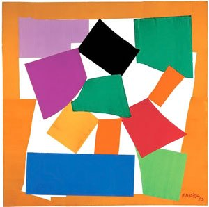

The Snail
Henri Matisse · 1953 · Gouache on paper, cut and pasted on paper mounted on canvas · 286.4 × 287 cm · Tate, London
In copyright. Look and learn: shown for study, not for download.
The Snail was made in Matisse's rooms at the Hôtel Régina in Nice, where assistants painted sheets of paper in gouache for him and pinned the pieces he cut to a white sheet on the wall, exactly where he pointed. He had been confined to bed since 1948 and could not work at an easel. The idea came from drawings of a snail he held in his fingers. Before the panel was sent to Paris to be pasted down, a precise tracing was made so nothing moved by a millimetre. It is nearly three metres square.